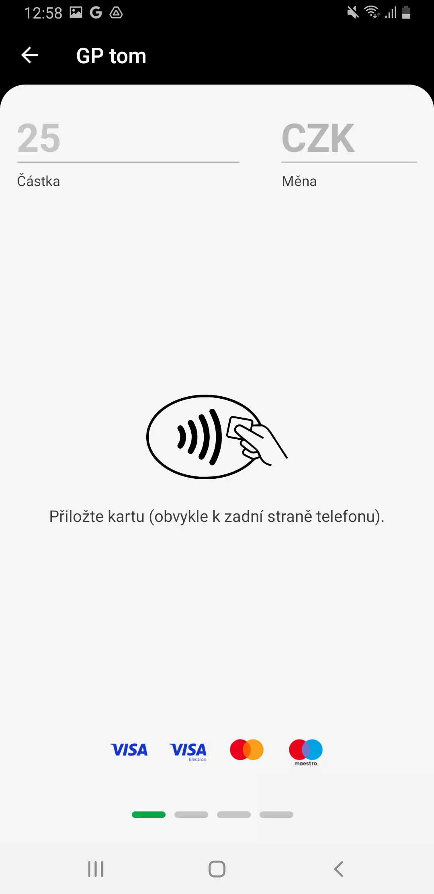
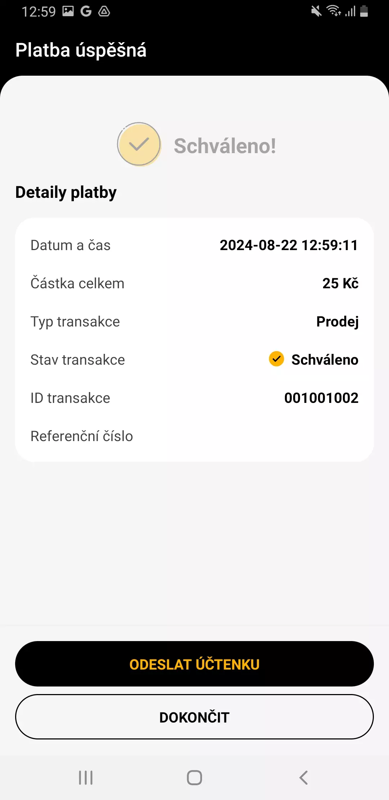

Integrace s GP tom
Update 14.10.2024
Addon Integrace s GP tom je určen především pro bezešvou integraci Business Central s platebními terminály, aby se staly nativní součástí obchodních procesů. Navíc umožnuje provádět i související obslužné operace přímo z prostředí BC.
Modul propojuje Microsoft Dynamics 365 Business Central s platebními terminály, resp. s řešením tom na terminálech provozovaném. Díky tomuto řešení umožníte zákazníkům platby nejen kartami Visa a Mastercard, ale tak pomocí Apple Pay, Google Pay, Edenred… Více zde.
Použití
V následujícím textu je popsáno využití terminálu pro nejběžnější případ, tedy úhradu platební kartou.
Registrace platby na terminálu dle výchozího nastavení
In this case, this is the standard BC functionality where the user uses the Post and Send function for posting. Each customer has a document posting profile set on his/her card, or the profile marked as default is used.
- Vyberte ikonu
 , zadejte Platební terminály a poté vyberte související odkaz.
, zadejte Platební terminály a poté vyberte související odkaz. - Na stránce Platební terminály vyberte terminál, na kterém chcete provést platbu.
- Spusťte akci Registrace plateb.
- Na stránce Registrovat platbu zadejte v poli Částka hodnotu pro úhradu terminálem.
- Spusťte akci Zaplatit.
- Na terminálu se objeví dialog „Přiložte kartu“. 
- Po úspěšné úhradě se objeví dialog, kde obsluha provede odeslání dokladu o platbě (popř. může rovnou Dokončit proces) 
- V dialogu pro odeslání účtenky je předvyplněn způsob odeslání nastavený pro příslušný terminál
- Po ukončení procesu platby na terminálu se na stránce Registrovat platbu objeví oznámení s výsledkem operace, vč. volby Otevřít položku pro zobrazení položky s detaily o proběhlé komunikaci s terminálem.
Tip
Při použití akce Zaplatit a zavřít v bodě 5 dojde po transakci k zavření stránky Registrovat platbu.
Registrace platby na terminálu se specifickým nastavením
Specifickým nastavením je myšleno především zpracování spropitného a jiná měna transakce nežli ta výchozí.
- Vyberte ikonu , zadejte Platební terminály a poté vyberte související odkaz.
- Na stránce Platební terminály vyberte terminál, na kterém chcete provést platbu.
- Spusťte akci Registrace plateb.
- Na stránce Registrovat platbu zadejte v poli Částka hodnotu pro úhradu terminálem.
- Na záložce Platba klikněte na Zobrazit více.
- Zapněte příznak Vybrat spropitné, pokud se má na terminálu uživateli nabídnout zadání spropitného. V poli Částka spropitného pak zadejte částku, která se má na terminálu objevit.
- V poli Měna zadejte měnu, ve které má být úhrada provedena.
- V poli Referenční číslo můžete změnit označení transakce využívané pro trasovatelnost mezi záznamy v BC a v GP Tom.
- Na záložce Možnosti vyberte v poli Typ účtenky hodnotu E-mail nebo Telefon; pak je třeba v poli Účtenku odeslat na zadat e-mailovou adresu, resp. telefonní číslo.
- Spusťte akci Zaplatit.
- Na terminálu se objeví dialog „Přiložte kartu“ a postupujte stejně jako je popsáno od bodu 6 dále v předchozí kapitole.
Storno platby
Tuto operaci je možné provést přímo z BC, ale samozřejmě i na terminálu (podmínky storna jsou dány podmínkami GP tom v závislosti na konkrétním trhu).
- Vyberte ikonu , zadejte Transakce platebního terminálu a poté vyberte související odkaz.
- Na stránce Transakce platebního terminálu vyberte záznam, který chcete stornovat.
- Spusťte akci Storno transakce.
- Na potvrzujícím dialogu stiskněte Ano.
- Ověřte, že se stav transakce změnil na Stornovaná.
Aktualizace stavu transakce
Může se stát, že terminál bude zpracovávat transakci déle, než je nastavená čekací doba. Nebo že transakce byla zrušena přímo na terminálu. V takovém případě je třeba, aby se dodatečně aktualizovala evidence v BC tak, aby obsahovala finální stav transakce.
- Vyberte ikonu , zadejte Transakce platebního terminálu a poté vyberte související odkaz.
- Na stránce Transakce platebního terminálu vyberte záznam, který chcete aktualizovat (s hodnotou „Vytvořená“ v poli Stav transakce).
- Spusťte akci Aktualizovat stav transakce.
- Ověřte, že se změnil stav transakce a byly doplněny další údaje identifikují transakci (např. ID transakce).
Dodatečné odeslání účtenky
Tato možnost je dostupná pouze na terminálu v seznamu plateb.
Uzávěrka
Tuto administrativní operaci je možné provést přímo z BC, ale samozřejmě i na terminálu.
- Vyberte ikonu , zadejte Platební terminály a poté vyberte související odkaz.
- Na stránce Platební terminály vyberte terminál, na kterém chcete provést uzávěrku.
- Spusťte akci Provést uzávěrku.
- V aplikaci na terminálu se otevře seznam uzavřených dávek.
Viz také
Nastavení Integrace s GP tom
Streamline Tools
ARICOMA řešení